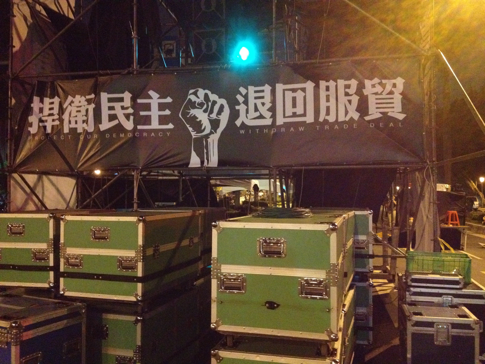

主題講解
介紹國內外人權、法治理論與實務、臺灣在地的具體社會正義議題等，以便學習者具備公民基本知識與公民素養。

多媒體教學
以新聞影片與電影等為輔助，進行議題分析與討論。
人權/行動/影音報告
針對這學期發生的與社會正義有關的法治人權議題，分組集思廣益設計一個具實踐性的行動方案或創意報告，於期末做成果總分享。

開站日期：2022年2月20日 最後更新：2022年2月28日
網站主持人：陳閔翔 設計製作：江品萱
本網站全部內容版權所有 Copyright © 2022 All Rights Reserved